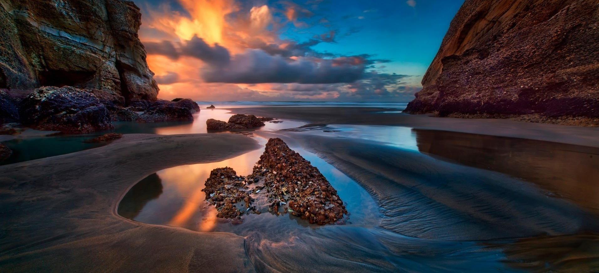
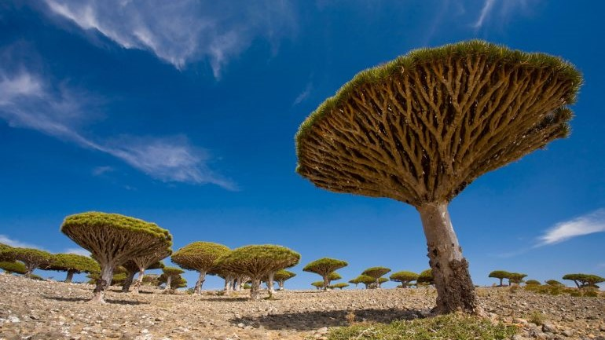

Национальный парк Каньонлэндс
Национальный парк Каньонлэндс – одно из самых диких мест в США. Здесь нет супермаркетов, гостиниц и магазинов. Выжженная каменистая земля красного цвета создает иллюзию марсианского пейзажа. Землю каньонов окружают Скалистые горы с заснеженными вершинами, вдали в закатном солнце поблескивает река Green River, которая с высоты кажется маленьким ручейком. Все это придает каньону величественный и фантастический …
Читать далее...
03.01.18 | Автор: Иванов И.И.
Просмотры: 666

«Врата в ад» в Туркменистане
Дарваз — горящую пещеру в Туркменистане местные жители называют «Вратами в ад». И действительно зрелище не для слабонервных: из песка в бескрайней пустыне вырывается огромное пламя. Такое впечатление, что открывается вход в преисподнюю. И если вам захотелось холода, то вам на Чудеса, которые есть на Камчатке ...
Читать далее...
02.01.18 | Автор: Иванов И.И.
Просмотры: 777

Сокотра – остров счастья
Архипелаг Сокотра состоит из четырех островов и расположен в Индийском океане, всего в 250 км от Сомали. Это одно из самых уникальных мест на земле. Ландшафт острова настолько необычен, что создается иллюзия нереальности, ведь такую красоту можно увидеть только в фильмах о неземных цивилизациях. Сокотра самое изолированное место на планете и большинство растений, которые произрастают …
Читать далее...
01.01.18 | Автор: Иванов И.И.
Просмотры: 999